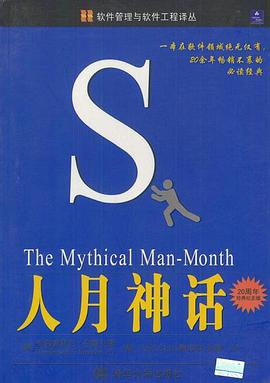

人月神话
不能避免的焦油坑，不存在的银弹。真是，今天与30年前在项目管理上真是没什么差别。本书实在经验容量太大，不能啃透啊，看来以后还是得再看很多遍。
作品信息
| 作者 | [美] 弗雷德里克·布鲁克斯 |
| 译者 | 汪颖 |
| 出版社 | 清华大学出版社 |
| 出版年 | 2002-11 |
| ISBN | 9787302059325 |
| 页数 | 369 |
| 装帧 | 平装 |
| 定价 | 29.80元 |
说过什么
2014-06-17 20:15:56
广播 · 读过 · ★★★★☆
不能避免的焦油坑，不存在的银弹。真是，今天与30年前在项目管理上真是没什么差别。本书实在经验容量太大，不能啃透啊，看来以后还是得再看很多遍。
最后一次看到是 2026-08-01T11:00:53+10:00 · 豆瓣原页